אתם, הסטודנטים שלנו, אתם העיקר. אתם הלב של התוכנית ומה שהופכים אותה לתכנית הכל כך מיוחדת שהיא, ולכן, החלטנו לשלוח שאלון לכל הסטודנטים (גם אלו שעכשיו וגם אלו שהיו) כדי להכיר אתכם טיפה יותר.
| איפה נולדתי | אוכל המועדף | חיית מחמד |
| תחביבים | תחומי מחקר אקדמים | דמות מעוררת השראה |
| תכנונים לעתיד | החוויה מהלימודים בתכנית |
אורי גדות – התקבל לתכנית בשנת תשע”ט
פתח תקווה
ספורט (לצפות ולבצע) טיולים ובישול
כלב
הכל
טיול ואז תואר שני
מחשבים, עיבוד אותות ותמונות, למידת מכונה ומערכות נבונות
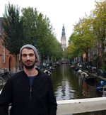
אורי שוייצר – התקבל לתכנית בשנת תש”פ
לנגן בפסנתר
חתול
שוקולד
רשתות מחשבים, מחשבים, עיבוד אותות ותמונות, למידת מכונה ומערכות נבונות

אמיר אבו חנא – התקבל לתכנית בשנת תשע”ח
מעיליא
לשחק שחמט ולנגן
כלב
המבורגר
איינשטיין
בקרה ורובוטיקה, מחשבים, עיבוד אותות ותמונות, למידת מכונה ומערכות נבונות
כרגע אני ממשיך לעבוד באפל, אולי אעשה תואר שני בהמשך
הכרתי מהטיול הכי ראשון שלי בתוכנית מישהו בשנתי האחרונה, ונהיינו חברים טובים עד היום. תודה לטיול השנתי ההוא שנתן לנו להכיר.

בר וייס – התקבל לתכנית בשנת תש”פ
תל אביב
אני מנגן בגיטרה ושוחה
אותות ומערכות ביולוגיים, עיבוד אותות ותמונות, למידת מכונה ומערכות נבונות
נחשפתי להרצאות בנושאים מעניינים והכרתי יותר את התחומים שחוקרים בפקולטה וזה היה מעניין, מעשיר וחשף לי תחומים מעניינים שחלקם השפיעו גם מעל הקורסים שבחרתי ללמוד בתואר.
דביר מארש – התקבל לתכנית בשנת תשע”ט
קרית בנימין
לרוץ, לקרוא
בשרי
הרב שלי מהישיבה, אבא שלי, סבא שלי
אלקטרומגנטיות ופוטוניקה, עיבוד אותות ותמונות, למידת מכונה ומערכות נבונות, טכנולוגיות קוונטיות
תואר שני
לירז נינה כץ כליף – התקבלה לתכנית בשנת תש”פ
ירושלים
ניווט תחרותי, קריאה, שחייה, נגינה
כלב
פיסטוק
מארי קירי
תקשורת, עיבוד אותות ותמונות, אנרגיה ומערכות הספק
מג׳ד גנאיים – התקבל לתכנית בשנת תשע”ט
גדלתי בעיר באקה אלגארביה
לשחק טניס שולחן, לצפות בספורט מוטורי (F1 בעיקר), משחקי מחשב וanime
על האש – סטייק פלה/אנטריקות
תקשורת, מחשבים, למידת מכונה ומערכות נבונות
תואר שני 🙂
התוכנית עזרה לי להתעניין בעוד תחומים בפקולטה ולהבין את החשיבות של הצד המחקרי ואיך הוא מתנהל.
משה ליבליך – התקבל לתכנית בשנת תש”פ
ברוקלין, ניו יורק, ארהב
לטייל, ספורט (בעיקר כדורגל) וסתם לשבת על בירה
פיצה, עד חצות לבן
מחשבים, אותות ומערכות ביולוגיים, עיבוד אותות ותמונות, למידת מכונה ומערכות נבונות
טיול פוסט קורונה
הרצאות מאד מעניינות ומרחיבות אופקים להתמחויות אופציונאליות בעתיד
נועם אילתה – התקבל לתכנית בשנת תשפ”א
רדווד סיטי, קליפורניה
נגינה וגלישת גלים
חתול
פיצה
עיבוד אותות ותמונות, למידת מכונה ומערכות נבונות
תמיד כיף לשבת בחדר תוכנית 🙂
נועם קסטן – התקבל לתכנית בשנת תשפ”א
מודיעין-מכבים-רעות
לצלם, לבנות רחפנים, לרוץ, לשבת עם חברים, לצאת עם הטלסקופ, לקרוא וללמוד דברים חדשים. רוב הדברים אני עדיין משתדל לעשות 🙂
חתול
כנאפה כשבא מתוק, אחרת – אנטריקוט.
ריצ’רד פיינמן, שילב מחקר עם המון משמעות, סקרנות והומור משובח.
למידת מכונה ומערכות נבונות, טכנולוגיות קוונטיות, אסטרופיזיקה
תואר שני והמשך מחקר.
הייתי אומר שהפגישה הראשונה עם הדיקן הייתה מאוד מעניינת ובעלת יחס חם ואישי לכל אחד ממשתתפי התכנית אף על פי שהייתה בזום. היה גם נחמד לשמוע קצת על שאר משתתפי התכנית בפגישה זו.

סער טרנופולסקי – התקבל לתכנית בשנת תש”פ
חיפה
כדורסל (ספורט), לקרוא
כלב
סטייק
תקשורת, מחשבים, עיבוד אותות ותמונות
סתיו בנו – התקבלה לתכנית בשנת תשפ”א
חיפה
ריקוד, ריצה וספורט באופן כללי
כלב
איטלקי!
מחשבים, למידת מכונה ומערכות נבונות, עדיין בודקת כיוונים 🙂
מאד נהנתי מההרצאה של ד”ר ניר וינברנגר שעסקה בלמידת מכונה בערוץ תקשורת לא ידוע. בתור סטודנטית בשנה ב’ אספתי עד כה בעיקר רקע מתמטי ורק בסמסטר האחרון הרגשתי שאני מתחילה לגעת בקצה העולם המגוון של הנדסת חשמל. ההרצאה הועברה בצורה כה מעולה שהצלחתי להבין , להתחבר ולהסתקרן מנושאי התקשורת ולמידת המכונה. ייתכן שגם העובדה שזו היתה ההרצאה הפרונטלית הראשונה שנכחתי בה במסגרת התוכנית סייעה לחיזוק החוויה החיובית.
עידו סובול – התקבל לתכנית בשנת תשפ”א
חיפה
מוזיקה, כתיבה, קריאה
המבורגר וצ’יפס
הרמיוני גריינג’ר
רשתות מחשבים, מחשבים, עיבוד אותות ותמונות, מעגלים אלקטרוניים ומערכות VLSI, למידת מכונה ומערכות נבונות
השתלבות בתעשייה, תואר מתקדם ומחקר

עפרי אייזן – התקבל לתכנית בשנת תש”פ
חיפה
טניס, כדורעף חופים, קריאת ספרים.
כלב
פיצה
בקרה ורובוטיקה, תקשורת, אותות ומערכות ביולוגיים, עיבוד אותות ותמונות
נכון לעכשיו אני מתכנן להמשיך לתואר שני. בהמשך הייתי רוצה להשתלב בתחום הנהיגה האוטונומית / בתחום הצילום החישובי.
ההרצאה של ניר וינברגר חשפה אותי לתחום התקשורת, תחום שכלל לא חשבתי להתעסק בו בעתיד. ההרצאה גילתה לי פנים חדשים שלא הכרתי בתחום, זה יצר אצלי המון סקרנות לתחום.
רותם אידלסון – התקבלה לתכנית בשנת תש”פ
תל אביב
לרקוד, לצייר ולטייל בארץ
כלב
קנלוני בטטה של אמא
יעל ויזל, בוגרת הפקולטה להנדסת חשמל בטכניון כיום מייסדת ומנכ”לית חברת זיקית
עיבוד אותות ותמונות, למידת מכונה ומערכות נבונות
בטוח תואר שני, השאלה היא רק מתי
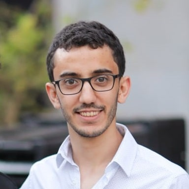
רותם אלימלך – התקבל לתכנית בשנת תשפ”א
רמלה
הייתי מנגן על בס, קורא הרבה ספרים ויוצא לריצות ארוכות
קוסקוס ומרק עוף 🙂
אלקטרומגנטיות ופוטוניקה, עיבוד אותות ותמונות, טכנולוגיות קוונטיות
מתלבט בין תואר שני לעבודה בסטארטאפ
שאדי אסכנדר – התקבל לתכנית בשנת תשע”ט
נולדתי בנצרת
שחיקתי ספורט (כדורסל,כדורגל) כל יום כל אחרי הצהריים. אוהב לצפות בסרטים ולקרוא ספר טוב לפני השינה
כלב
האוכל המועדף הוא אוכל של סבתא! בחוץ אוהב לאכול סלמון
מייקל גורדן. בן אדם עם מנטליות מדהימה. ידע איך לנצל את הכישרון שיש לו וכיוון רק לגדולה.
מחשבים, עיבוד אותות ותמונות, למידת מכונה ומערכות נבונות, טכנולוגיות קוונטיות
תואר שני, אחר כך להשתלב בתעשייה
שהם גרינבלט – התקבל לתכנית בשנת תשפ”א
ירושלים
אני מאוד אוהב לשחות- אפילו הייתי שחיין תחרותי בעבר. נהנה לשיר במקהלה, לאפות עוגות ולפתור חידות.
קארי של סבתא
אנתוני ארווין- שחיין אולימפי שזכה בשתי מדליות זהב בהפרש של 16 שנה אחרי הרבה משברים פיזיים ונפשיים בין לבין.
תקשורת, למידת מכונה ומערכות נבונות
תואר שני ואז סטרטאפ שיביא חדשנות בספורט באמצעות בינה מלאכותית
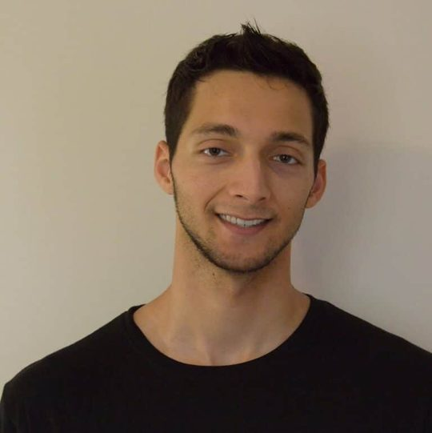
שי יחזקאל – התקבל לתכנית בשנת תש”פ
תל השומר
כדור-סל, צפייה בכוכבים
אוגרים
פיצה
Margaret Hamilton
בקרה ורובוטיקה, מחשבים, עיבוד אותות ותמונות, למידת מכונה ומערכות נבונות
עבודה בתעשייה ואולי תאור שני
הכרת חברים חדשים
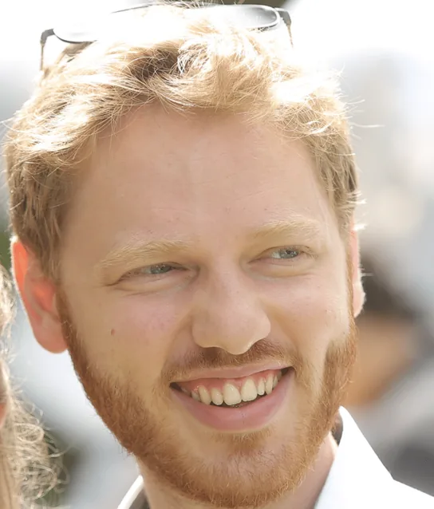
תומר טנא – התקבל לתכנית בשנת תשפ”א
תל אביב
לנגן בגיטרה ולטייל
המבורגר
מחשבים, למידת מכונה ומערכות נבונות
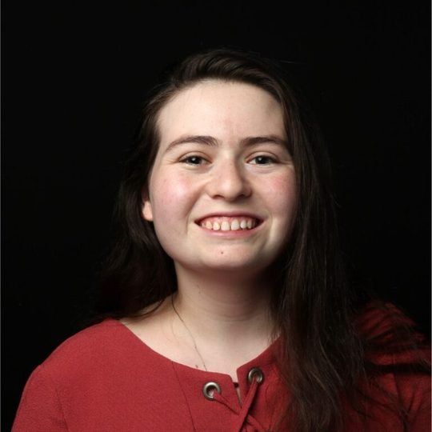
נועה שהם – התקבלה לתכנית בשנת תשפ”
לוד
ריקוד
סושי
מחשבים, עיבוד אותות ותמונות, למידת מכונה ומערכות נבונות
תואר שני

עידו גליק – התקבל לתכנית בשנת תשפ”א
ישראל
שחייה, ציור, שירה
תפוח אדמה מוקרם
מיחשוב קוונטי, ארכיטקטורות מחשבים
הכרתי מלא אנשים טובים, שתמיד נכונים לעזור וסתם נחמד להתעדכן איתם. כמו כן קיבלנו מלא הרצאות של חברי סגל ברמה גבוהה שמאוד עזרו להכיר את הפקולטה ולפתוח את המחשבה, כמובן שאין תחליף לחדר אמ”ת שזה המרחב למידה הכי טוב בפקולטה.

מוחמד אבו אל היג’א – התקבל לתכנית בשנת תשפ”א
חתול
מוקפץ אסייתי all the way
הכי חשוב זה שמקבלים את ההזדמנות לפגוש אנשים מעולים.
פוטוניקה, טכנולוגיות קוונטיות
צילום טבע, טנס, שחייה
להמשיך באקדמיה, תארים מתקדמים, אחר כך עוד אקדמיה או מחקר בתעשייה
אביעד מועלם – התקבל לתכנית בשנת תשפ”א
טיולים, מוזיקה, הופעות, הייקינג, צילום
תוכנה, רשתות, סייבר, למידת מכונה
התוכנית סיפקה הרצאות מעניינות מטעם חברי סגל שונים, וכן גם טיולים נחמדים. התוכנית דחפה אותנו לבצע פרויקט עם חברי סגל – חווייה שהייתה מאוד מעניינת, נעימה, מלמדת ומועילה. בזכות זאת, פיתחנו קשרים עם חברי סגל שונים, מה שבהחלט עשוי לעזור בהמשך
ערן מן – התקבל לתכנית בשנת תשפ”
ישראל
טניס, שחמט
עתודאי – מתגייס לצבא לחיל המודיעין
שקשוקה
גלים, RF, אופטיקה, עיבוד תמונה
התוכנית מספקת הרצאות מעניינות כמה פעמים בסמסטר, אשר חשפו אותי למספר חברי סגל ותחומי עניין אקדמאים מעניינים.
בנוסף הכרתי הרבה חברים ואנשים מעניינים בתכנית.
שני חתולים

איתמר נירנברג – התקבל לתכנית בשנת תשפ”ב
ישראל
טניס וריצה
Machine Learning
חשיפה לחברי סגל בפקולטה והזדמנויות רבות לביצוע פרויקטים ברמה מאוד מתקדמת ובעלי אופי מחקרי
רוי סנדרוביץ – התקבל לתכנית בשנת תשפ”ב
ישראל
צלעות כבש
ספורט אתגרי, היסטוריה, בילויים ומשחקי קלפים
תוכנה, למידת מכונה וסטטיסטיקה
טיול טוב, קצת תעשייה ואז תואר שני
מגבשת חברתית ונותנת חשיפה חמודה לתארים מתקדמים
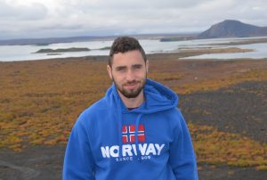
אור רונאי – התקבל לתכנית בשנת תשפ”ב
המבורגר
ספורט, אוכל, לטייל
עיבוד אותות ותמונות, למידת מכונה, מחשבים
מעשירה, נותנת כיוונים להמשך (בין אם למחקר ובין אם להבין מה מעניין), טיול מגבש

דימא דבאח – התקבלה לתכנית בשנת תשפ”ב
פסטה
לראות סרטים
מיקרו וננו
חוויה מהממת
הזדמנות מצוינת להכיר אנשים מיוחדים ונחמדים.
אופציה להכיר אישית הרבה חוקרים מתחומים שונים ולשמוע על המחקר שלהם, התוכנית מסייעת לכל הסטודנטים המעוניינים בתואר שני
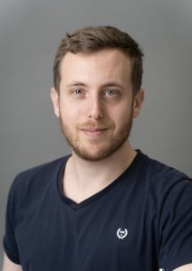
ניר טבת – התקבל לתכנית בשנת תשפ”ב
ראיה ממוחשבת ו ML
התכנית מאד מעשירה, עוזרת ליצור קשרים אישיים עם סטודנטים מצטיינים בפקולטה ונותנת הצצה למחקר בפקולטה. כמו כן, פרויקט המחקר נותן חוויה מעשית ומעשירה למחקר. וכמובן התכנית גם מגבשת וכיפית.
תואר שני בפקולטה
מידן זהבי – התקבל לתכנית בשנת תשפ”ב
ישראל
2 תוכים
פיצה
Kontis, machine learning, electromagnetism, and photonics
הוויה מאוד חיובית. ההברה היו איכותיים. המפגשים היו מעניינים וכייפים
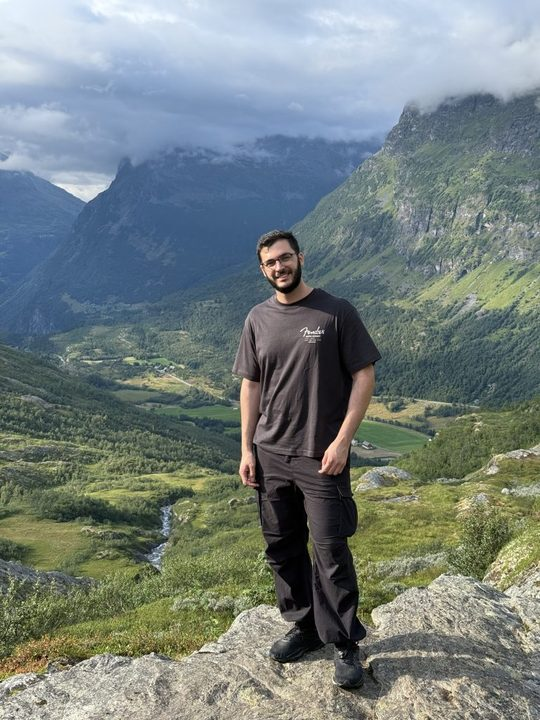
דניאל קלי – התקבל לתכנית בשנת תשפ”ג
ישראל
חתול ספינקס
ספורט, סרטים, מוזיקה ומשחקי מחשב
אנטריקוט
תקשורת ואינפורמציה
תואר שני במקביל לעבודה באפל
הרצאות מעניינות, שחשפו אותי לעבודה בפקולטה ותחומי עניין שלא באמת נחשפים אליהם בתואר ראשון, מה שהיה מאוד מעניין. התוכנית גם די שכנעה אותי לעשות תואר שני, דבר שהתלבטתי עליו מראש. בנוסף התמיכה שהתקבלה מהתוכנית הייתה מאוד נחמדה לאורך התואר

סוף רובינשטיין – התקבל לתכנית בשנת תשפ”ב
ישראל
חדר כושר, כדורסל, טיולים
מבנה מחשבים, למידה עמוקה
ההשתתפות בתכנית הייתה חוויה מעשירה – נחשפנו להרצאות מעניינות של חוקרים ואנשי תעשייה, רכשנו ידע חדש והרחבנו אופקים. התכנית מעודדת שאיפה למצוינות, ובמקביל מעניקה מסגרת חברתית עם ימי גיבוש שנתיים מהנים

חגי שלסקי – התקבל לתכנית בשנת תשפ”ג
ישראל
כל סוגי הבשר
ארכיטקטורת מחשבים, רשתות מחשבים, VLSI
ארכיטקט מעבדים באינטל
תכנית מלמדת ומעשירה, מאוד מעניין להגיע להרצאות ולשמוע על עולמות המחקר השונים בפקולטה

עמית שלו – התקבל לתכנית בשנת תשפ”ב
ישראל
אין
לנגן ולטייל
איטלקי
למידה מחיזוקים, עיבוד אותות
לצאת לטיול גדול, עבודה ובהמשך תואר שני
התכנית מאוד עוזרת להעמיק בתחומים שמעניינים אותך

גלי איתן – התקבל לתכנית בשנת תשפ”ב
ישראל
כלב
שחייה וגלישה
פסטה בולונז
עיבוד אותות, טכנולוגיות קוונטיות ואסטרופיזיקה
להמשיך להתקדם ולחקור באקדמיה
חוויה מעולה, קיבלתי המון תמיכה מצוות התכנית שעזר לי להתקדם בקצב שלי לאתגר את עצמי ולהתפתח אקדמית. נהניתי לבוא לפגוש את כולם ולהרחיב אופקים במפגשים במהלך הסמסטר והטיול השנתי בכלל היה מטורף.
הרבה מזה היה בזכות תימור המקסימה שאין עליה!

הדר בן לולו – התקבל לתכנית בשנת תשפ”ד
ישראל
מוזיקה (גיטרה), ספורט, ים
גלידה
אלקטרו-אופטיקה, פיזיקה
לתרום משהו למדע/טכנולוגיה
התכנית חושפת את המשתתפים בה למגוון רחב של תחומים, ולחוקרים מעניינים

יובל דרייזין – התקבל לתכנית בשנת תשפ”ד
ישראל
טיולים, אוכל
המבורגר
למידת מכונה, מחשבים, בקרה
מעשיר ומלמד מאוד! נחשפתי לתחומים רבים ומגוונים שהשפיעו על בחירת תחומי ההתמחות שלי.
כיף להיות חלק מתכנית אמ”ת!!

שועי רוטשטיין – התקבל לתכנית בשנת תשפ”ג
ישראל
חדר כושר, סרטים ומשחקי קופסא
פיצה
למידת מכונה, מחשבים
תואר שני
התוכנית הייתה חוויה מעולה – שילוב של אנשים טובים, חשיפה למחקר, והרצאות מעולות של חברי סגל
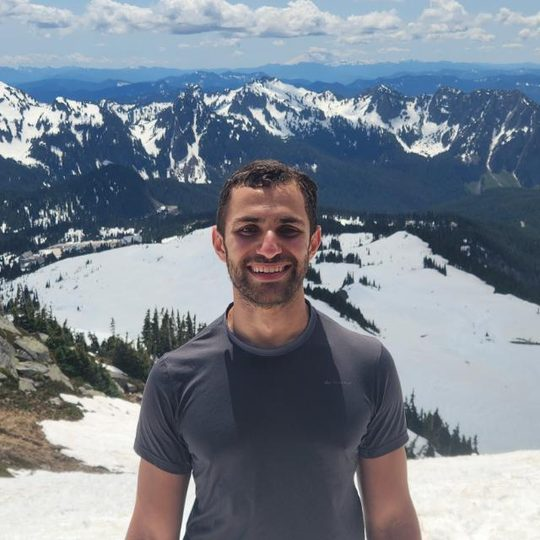
תומר בירן – התקבל לתכנית בשנת תשפ”ג
ישראל
חדר כושר, הופעות מוזיקה, טיולים והייקינג
חומוס סטייק ופיצה
low level programming, עיבוד אותות ותמונות, למידת מכונה
כלב
ההרצאות מאוד מעשירות והשיחות עם המרצים והחברים לתוכנית נותנות כיווני מחשבה טובים להמשך התואר. הטיולי גיבוש מאוד חווייתיים ומושקעים ועוזרים מאוד ליצור חברויות ונטוורקינג עם אנשים מאוד איכותיים
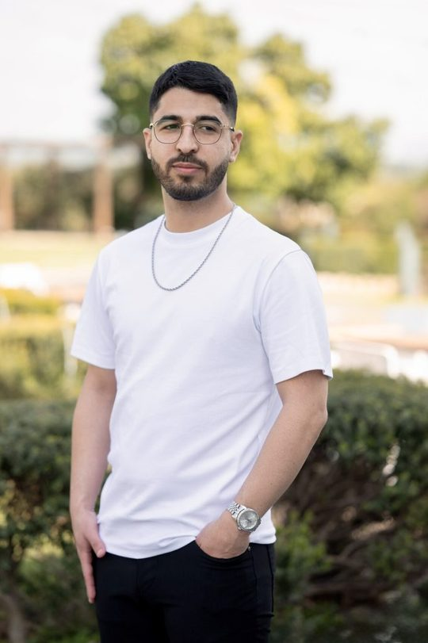
עומר ביבי – התקבל לתכנית בשנת תשפ”ג
ישראל
חתול
עיבוד אותות ותמונות, למידת מכונה
יכול להמליץ בלב שלם על התכנית, המפגשים תמיד מעניינים ותוכלו לפגוש גם תחומים שאולי לא נחשפתם אליהם מספיק (או בכלל) במהלך הלימודים. בכל מפגש בא חבר סגל לתת טעימה מהמחקר שלו. לפעמים באים גם אנשים מהתעשייה וגם את זה אהבתי. תוכלו להתחבר עם סטודנטים ותיקים ממכם (ועם הזמן גם צעירים מכם) וזה תמיד טוב. במסגרת התכנית מבצעים פרויקט מחקרי ולדעתי זו הזדמנות נחמדה לעומת פרויקט רגיל, ובכל מקרה המנחים תמיד ישמחו לשמוע שאתם מהתכנית.
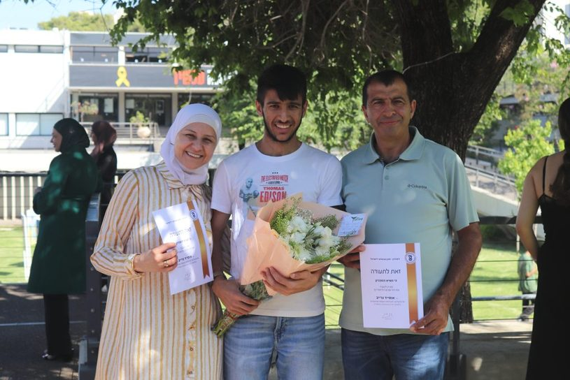
אוסייד גרייב – התקבל לתכנית בשנת תשפ”ד
ישראל
פסטה ברוטב עגבניות שאמא מכינה
לבלות עם משפחה וחברים, לרכוב על אופניים, לטייל ולשחק כשוער בכדורגל
אלקטרומגנטיות, אותות ותקשורת, מצב מוצק וננו אלקטרוניקה… ואולי קוונטית
אני מרגיש טוב כשאני מסביר לאחרים, ולכן אני מתכנן להיות מרצה. בנוסף, אני רוצה לגדל כלב או חתול
הרצאות ההעשרה חשפו אותי לתחומים מעניינים בפקולטה, והכרתי אנשים איכותיים שהיה כיף לשוחח ולדבר איתם. (בחירת הטיולים הייתה מעולה)